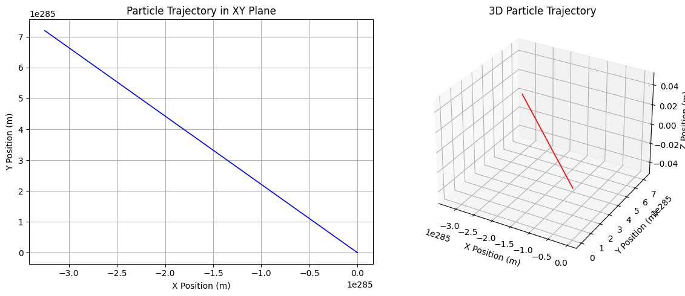

Simulating the Effects of the Lorentz Force
1. Introduction
The Lorentz Force, given by:
\[
\mathbf{F} = q\mathbf{E} + q\mathbf{v} \times \mathbf{B}
\]
describes the motion of a charged particle in the presence of electric and magnetic fields. This force plays a key role in plasma physics, particle accelerators, and astrophysics. In this study, we implement a simulation to visualize and analyze the effects of electric and magnetic fields on charged particles.
2. Applications of the Lorentz Force
1. Particle Accelerators
- Used in cyclotrons and synchrotrons.
- Magnetic fields guide and bend particle trajectories.
- Electric fields accelerate charged particles.
2. Mass Spectrometers
- Separates ions based on charge-to-mass ratio (q/m).
- Magnetic fields cause circular motion based on velocity and mass.
3. Plasma Confinement (Tokamaks, Stellarators)
- Used in fusion reactors to confine hot plasma.
- Particles spiral along magnetic field lines, reducing energy loss.
3. Particle Motion in Different Field Configurations
Case 1: Uniform Magnetic Field
- The particle moves in a circular trajectory (cyclotron motion).
- The Larmor radius is given by: $$ r_L = \frac{m v_{\perp}}{q B} $$
- The cyclotron frequency: $$ \omega_c = \frac{q B}{m} $$
Case 2: Combined Uniform Electric and Magnetic Fields
- Results in helical motion.
- Circular motion in the perpendicular plane combined with acceleration in the electric field direction.
Case 3: Crossed Electric and Magnetic Fields
- The particle undergoes E × B drift with velocity: $$ \mathbf{v}_d = \frac{\mathbf{E} \times \mathbf{B}}{B^2} $$
4. Numerical Approach
Using Newton’s Second Law:
\[
m \frac{d\mathbf{v}}{dt} = q (\mathbf{E} + \mathbf{v} \times \mathbf{B})
\]
We solve the equations of motion using the Euler method:
\[
\mathbf{v}(t + \Delta t) = \mathbf{v}(t) + \frac{\mathbf{F}(t)}{m} \Delta t
\]
\[
\mathbf{r}(t + \Delta t) = \mathbf{r}(t) + \mathbf{v}(t) \Delta t
\]
5. Python Implementation
import numpy as np
import matplotlib.pyplot as plt
from mpl_toolkits.mplot3d import Axes3D
# Constants
q = 1.6e-19 # Charge of the particle (Coulombs)
m = 9.11e-31 # Mass of the particle (kg)
dt = 1e-10 # Time step (seconds)
total_time = 1e-6 # Total simulation time (seconds)
# Field configurations
E = np.array([0, 0, 0]) # Electric field (V/m)
B = np.array([0, 0, 1]) # Magnetic field (Tesla)
# Initial conditions
v0 = np.array([1e6, 1e6, 0]) # Initial velocity (m/s)
r0 = np.array([0, 0, 0]) # Initial position (m)
# Time array
time_steps = int(total_time / dt)
t = np.linspace(0, total_time, time_steps)
# Arrays to store position and velocity
positions = np.zeros((time_steps, 3))
velocities = np.zeros((time_steps, 3))
positions[0] = r0
velocities[0] = v0
def lorentz_force(v, E, B):
return q * (E + np.cross(v, B)) / m
def rk4_step(r, v, dt):
"""Computes one step using the 4th-order Runge-Kutta method."""
k1_v = lorentz_force(v, E, B) * dt
k1_r = v * dt
k2_v = lorentz_force(v + k1_v / 2, E, B) * dt
k2_r = (v + k1_v / 2) * dt
k3_v = lorentz_force(v + k2_v / 2, E, B) * dt
k3_r = (v + k2_v / 2) * dt
k4_v = lorentz_force(v + k3_v, E, B) * dt
k4_r = (v + k3_v) * dt
v_new = v + (k1_v + 2*k2_v + 2*k3_v + k4_v) / 6
r_new = r + (k1_r + 2*k2_r + 2*k3_r + k4_r) / 6
return r_new, v_new
# Solve motion using RK4
for i in range(1, time_steps):
positions[i], velocities[i] = rk4_step(positions[i-1], velocities[i-1], dt)
# Visualization
fig = plt.figure(figsize=(12, 5))
# 2D Projection (XY Plane)
ax1 = fig.add_subplot(121)
ax1.plot(positions[:, 0], positions[:, 1], color='b', linewidth=1.2)
ax1.set_title("Particle Trajectory in XY Plane")
ax1.set_xlabel("X Position (m)")
ax1.set_ylabel("Y Position (m)")
ax1.grid()
# 3D Trajectory
ax2 = fig.add_subplot(122, projection='3d')
ax2.plot(positions[:, 0], positions[:, 1], positions[:, 2], color='r', linewidth=1.2)
ax2.set_title("3D Particle Trajectory")
ax2.set_xlabel("X Position (m)")
ax2.set_ylabel("Y Position (m)")
ax2.set_zlabel("Z Position (m)")
plt.tight_layout()
plt.show()
